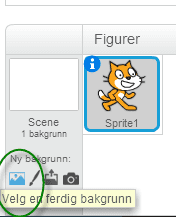
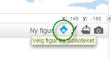
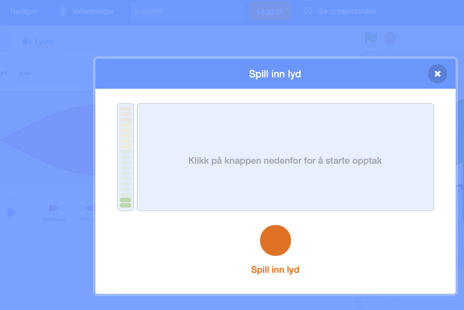

Vi skal lage et julekort i Scratch. Det skal ha noen enkle funksjoner og animasjoner. Når det er ferdig vil det se omtrent slik ut.
Steg 1: Endre bakgrunn og finne figurer
Når du er klar til å starte velger du Programmering i menyen øverst på siden http://scratch.mit.edu/. Da kommer vi inn i Scratch.
Sjekkliste
Klikk på scenen ved siden av kattefiguren Sprite1 i vinduet for figurer. Trykk på for å importere en ferdig bakgrunn. Velg den bakgrunnen du vil. Slett deretter den tomme bakgrunnen som ligger der.

Slett kattefiguren Sprite1 ved å høyreklikke på ham og slette.
Velg nye figurer fra biblioteket. Legg til isbjørnen, snømannen og juletreet.

Steg 2: Legge til kode
Nå skal vi få figurene til å gjøre ting når de blir klikket på.
Sjekkliste
Velg isbjørnen og fanen Skript og lag denne koden. Når isbjørnen blir klikket på skal den si God jul!. Deretter skal den skifte utseende hvert sekund, 10 ganger.
når denne figuren klikkes
si [God jul!] i (2) sekunder
gjenta (10) ganger
neste drakt
vent (1) sekunder
slutt
Test prosjektet ditt
Klikk på isbjørnen og se om koden din virker.
Sier isbjørnen God jul!?
Forandrer isbjørnen stilling?
Sjekkliste
Velg snømannen og fanen Skript og lag denne koden. Snømannen skal spørre etter navnet ditt. Den setter svaret inn i en ny setning. Deretter skal den skifte farge.
når denne figuren klikkes
spør [Hva er navnet ditt?] og vent
si (sett sammen [God jul ] (svar)) i (2) sekunder
for alltid
endre [farge v] effekt med (25)
slutt
Test prosjektet ditt
Klikk på snømannen og se om koden din virker.
Spør snømannen om navnet ditt?
Svarer snømannen med navnet ditt når du har skrevet det inn?
Forandrer snømannen farge?
Sjekkliste
Velg juletreet og fanen Skript og lag denne koden. Nå skal juletreet skifte farge og utseende.
når grønt flagg klikkes
for alltid
vent (0.3) sekunder
endre [farge v] effekt med (25)
neste drakt
slutt
Test prosjektet ditt
Trykk på det grønne flagget og se om alt virker.
Endrer treet farge?
Danser treet fra side til side?
Steg 3: Har du ledig tid, sier du?
Da har du jobbet godt! Om du fortsatt har ledig tid kan du:
Sjekkliste
Legge til din egen velkomsthilsen, for eksempel “God jul” eller du kan synge din egen julesang.
Klikk på Scene, og velg fanen Lyder.

Ta op din egen lyd, og gi den et navn, for eksempel julehilsen. Gå deretter inn på Skript, og legg inn følgende kode:
når grønt flagg klikkes
spill lyden [julehilsen v] til den er ferdig
Kanskje finne på noen andre morsomme animasjoner? Snømannen kan danse eller turne litt? Kan vi ha snakkende eller hoppende gale julepresanger? Du bestemmer!
Steg 4: Lagre og publisere
Gi julekortet ditt et navn. Velg deretter Lagre nå fra Filmenyen.
Deretter kan du publisere julekortet ditt ved å velge Legg ut.


 for å importere en ferdig bakgrunn. Velg den bakgrunnen du vil. Slett deretter den tomme bakgrunnen som ligger der.
for å importere en ferdig bakgrunn. Velg den bakgrunnen du vil. Slett deretter den tomme bakgrunnen som ligger der.